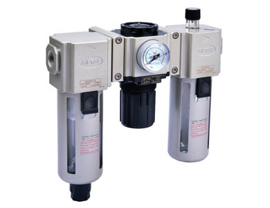
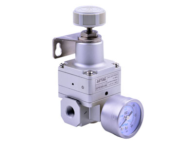
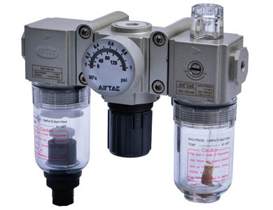
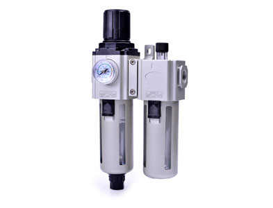
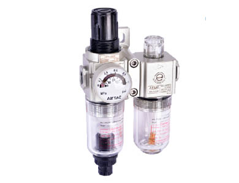
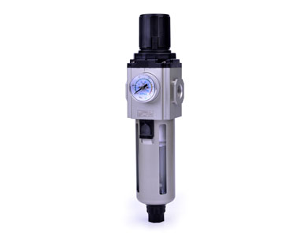
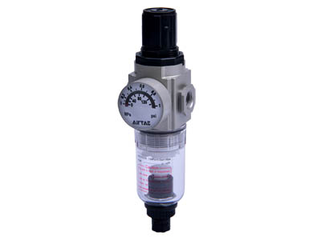
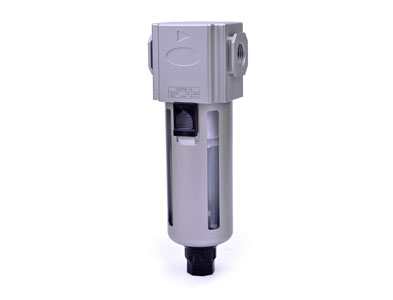
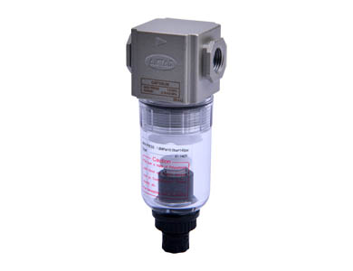

GAC Series cụm FRL
GAC Series cụm FRL: thông tin kỹ thuật, datasheet và cấu hình cần kiểm tra trước khi chọn FRL hoặc cụm xử lý khí.
Preparation unit

Phần này tóm tắt đặc điểm kỹ thuật và checklist chọn mã theo nhóm sản phẩm.
Chuẩn bị đủ các thông tin này giúp Fast Group kiểm tra cấu hình và báo giá nhanh hơn.
Có datasheet PDF để đối chiếu bảng mã, kích thước và phụ kiện trước khi chốt RFQ.
Fast Group Engineering cung cấp AirTAC chính hãng, hỗ trợ kiểm tra mã hàng, tư vấn cấu hình và chuẩn bị chứng từ theo yêu cầu từng đơn hàng.
Xem tài liệu hãngMở thêm các trang liên quan để so cấu hình, datasheet và lựa chọn thay thế.

GAC Series cụm FRL: thông tin kỹ thuật, datasheet và cấu hình cần kiểm tra trước khi chọn FRL hoặc cụm xử lý khí.

GAC100 Series cụm FRL: thông tin kỹ thuật, datasheet và cấu hình cần kiểm tra trước khi chọn FRL hoặc cụm xử lý khí.

GAFC Series cụm FRL: thông tin kỹ thuật, datasheet và cấu hình cần kiểm tra trước khi chọn FRL hoặc cụm xử lý khí.

GAFC100 Series cụm FRL: thông tin kỹ thuật, datasheet và cấu hình cần kiểm tra trước khi chọn FRL hoặc cụm xử lý khí.

GAFR Series bộ lọc điều áp: thông tin kỹ thuật, datasheet và cấu hình cần kiểm tra trước khi chọn FRL hoặc cụm xử lý khí.

GAFR100 Series bộ lọc điều áp: thông tin kỹ thuật, datasheet và cấu hình cần kiểm tra trước khi chọn FRL hoặc cụm xử lý khí.

GAF Series bộ lọc: thông tin kỹ thuật, datasheet và cấu hình cần kiểm tra trước khi chọn FRL hoặc cụm xử lý khí.

GAF100 Series bộ lọc: thông tin kỹ thuật, datasheet và cấu hình cần kiểm tra trước khi chọn FRL hoặc cụm xử lý khí.
Fast Group Engineering hỗ trợ cung cấp AirTAC chính hãng, báo giá theo RFQ và chứng từ theo yêu cầu từng đơn hàng.